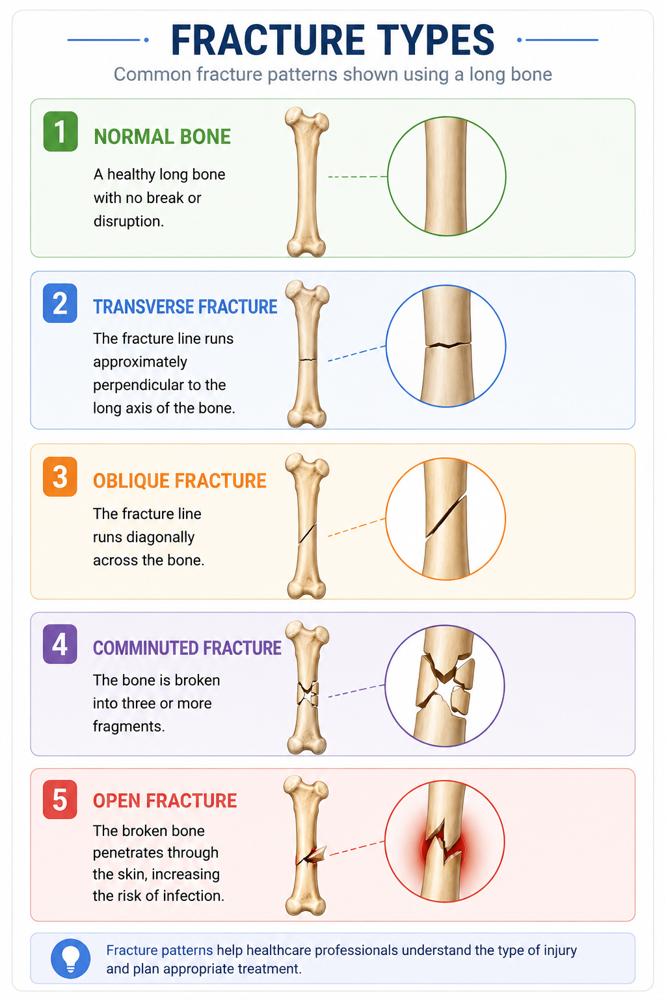
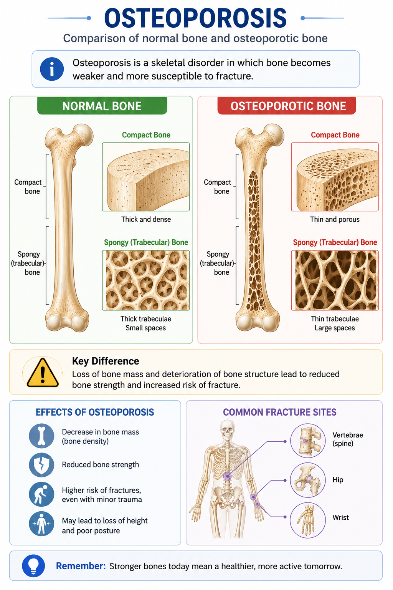
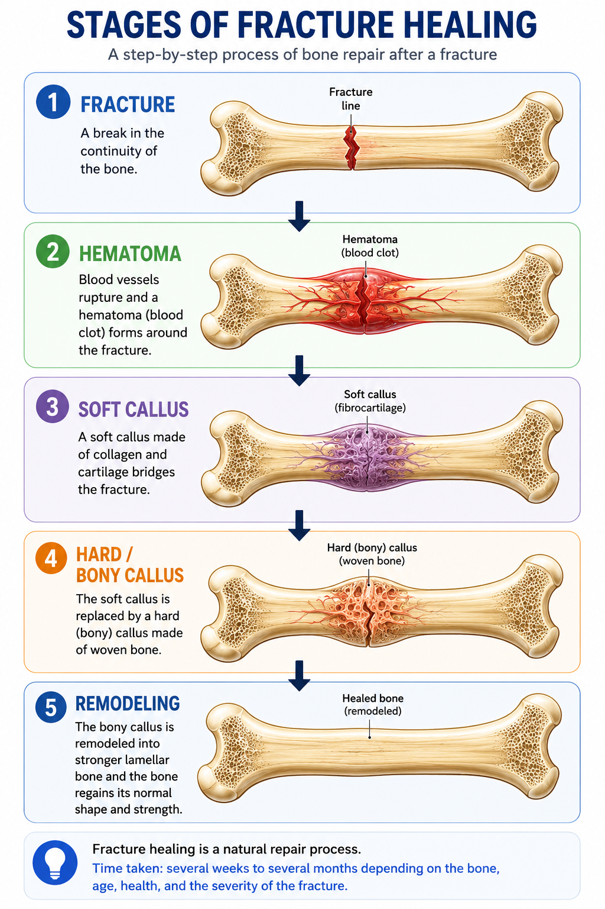
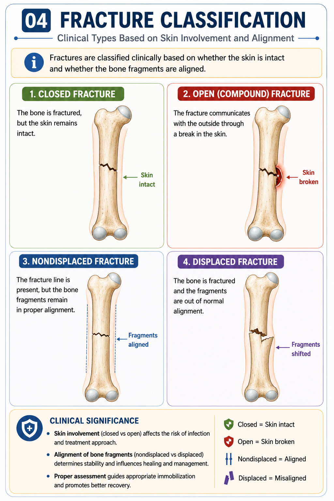
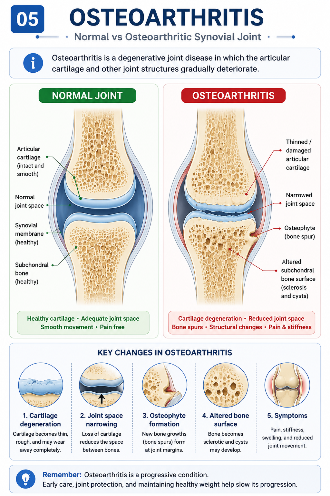
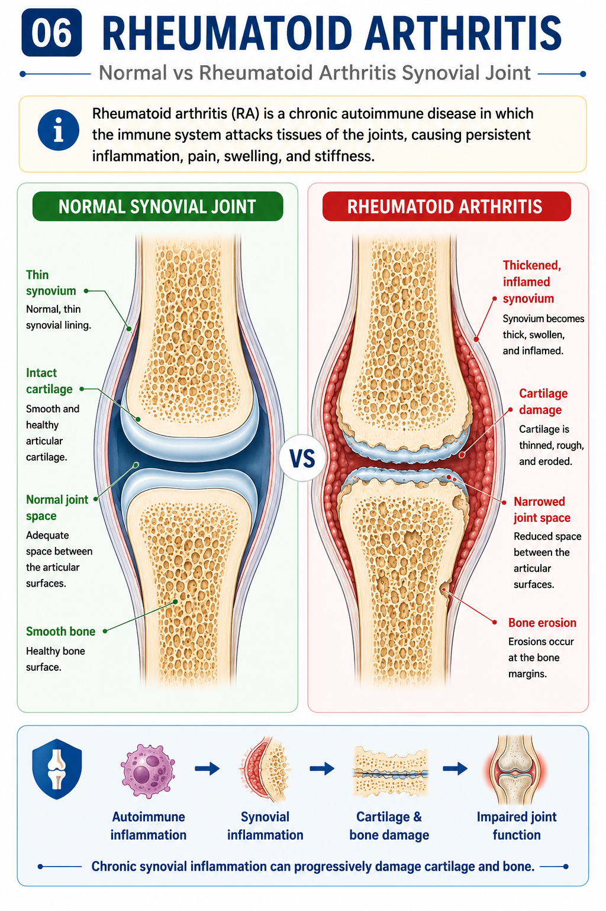
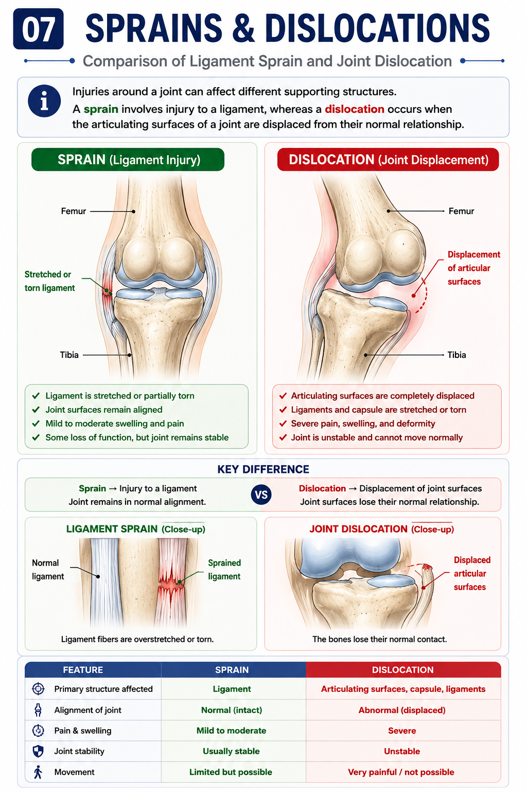
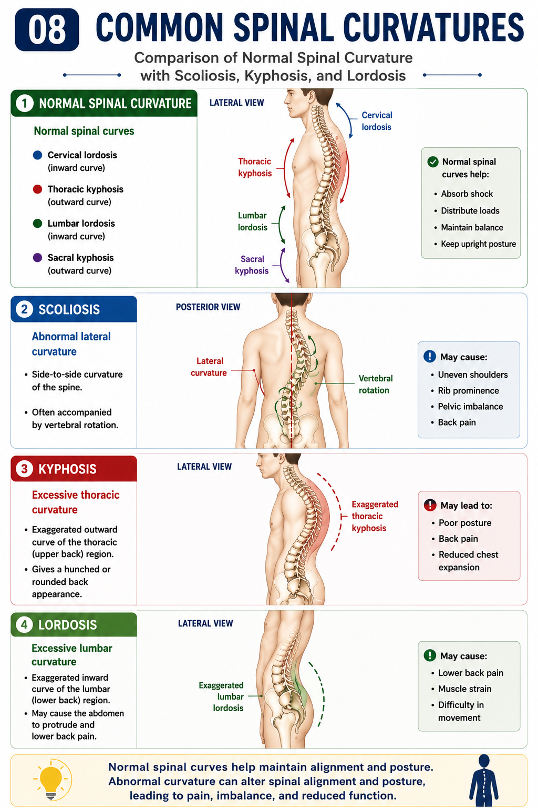

🦴 What changes?
Bone mass and structural strength decrease, making the skeleton more fragile.
Anatomy • Lesson 3.9
The skeletal system provides support, protection, movement, and structural stability. Changes or injuries involving bones, joints, and supporting structures can therefore affect movement and everyday function.
Clinical correlation connects the normal anatomy studied in this lesson with common skeletal conditions and injuries.

Osteoporosis is a skeletal disorder in which bone becomes weaker and more susceptible to fracture.

Bone mass and structural strength decrease, making the skeleton more fragile.
Weakened bones have an increased risk of fracture, sometimes following relatively minor trauma.
Fragility fractures may occur particularly in vulnerable bones such as the hip, vertebrae, and wrist.
Bone healing is a coordinated biological process in which damaged bone tissue is repaired and gradually restored.
After a fracture, healing progresses through overlapping stages that lead from the initial injury to formation of new bone and eventual remodeling.

Blood vessels are disrupted at the fracture site, producing a hematoma and initiating the healing response.
A soft callus forms around the fracture and helps stabilize the injured area.
New bone replaces the soft callus, providing greater strength and stability at the fracture site.
The newly formed bone is gradually reshaped and reorganized toward a stronger, more mature structure.
A fracture is a break or disruption in the continuity of a bone. Fractures may result from trauma, repetitive stress, or weakened bone.

The fracture line runs approximately perpendicular to the long axis of the bone.
The fracture line runs diagonally across the bone.
The fracture follows a twisting pattern around the bone.
The bone is broken into multiple fragments.
Osteoarthritis is a disorder involving the whole joint, with degeneration of articular cartilage being an important feature.

Articular cartilage becomes damaged and loses its normal smooth surface.
Changes within the joint can contribute to pain, stiffness, and reduced movement.
The joint may undergo progressive structural changes as the condition develops.
Rheumatoid arthritis (RA) is a chronic autoimmune disease in which the immune system mistakenly attacks tissues of the joints, causing persistent inflammation, pain, swelling, and stiffness.

The immune system mistakenly attacks healthy joint tissues, producing inflammation mainly in the synovium, the lining of the joint.
Persistent inflammation causes the synovium to become thickened and inflamed, contributing to pain, warmth, swelling, and reduced joint function.
As the disease progresses, the inflamed synovium can damage the articular cartilage and underlying bone, leading to progressive joint damage.
RA commonly affects the hands, wrists, and feet, and often affects corresponding joints on both sides of the body.
Injuries around a joint can affect different supporting structures. A sprain involves injury to a ligament, whereas a dislocation occurs when the articulating surfaces of a joint are displaced from their normal relationship.

Injury to a ligament caused by stretching or tearing.
Structure primarily affected: ligamentComplete displacement of the articulating surfaces of a joint from their normal position.
Structure primarily affected: joint articulationThe vertebral column normally has several curves that help distribute loads and maintain posture. Abnormal changes in spinal curvature can alter alignment and posture.

An abnormal lateral curvature of the spine, commonly accompanied by vertebral rotation.
An excessive posterior curvature of the thoracic spine.
An excessive anterior curvature, commonly referring to the lumbar region.
| Condition / Injury | Main structure involved | Key clinical change |
|---|---|---|
| Osteoporosis | Bone | Reduced bone mass and increased fragility |
| Fracture | Bone | Break or disruption in bone continuity |
| Fracture healing | Bone | Progressive repair followed by bone remodeling |
| Osteoarthritis | Joint, especially articular cartilage | Progressive joint degeneration |
| Rheumatoid arthritis | Synovium and other joint tissues | Persistent synovial inflammation with progressive joint damage |
| Sprain | Ligament | Stretching or tearing of a ligament |
| Dislocation | Joint articulation | Loss of normal alignment of articulating surfaces |
| Scoliosis | Vertebral column | Abnormal lateral spinal curvature |
| Kyphosis | Thoracic vertebral column | Excessive posterior curvature of the thoracic spine |
| Lordosis | Lumbar vertebral column | Excessive anterior curvature, commonly of the lumbar region |
Ready to test your understanding? Complete the quiz to reinforce the clinical concepts from this lesson.